Visualizing Software Architecture
Gary Kenneally
How is software architecture usually visualized?
UML
UML provides a standard notation
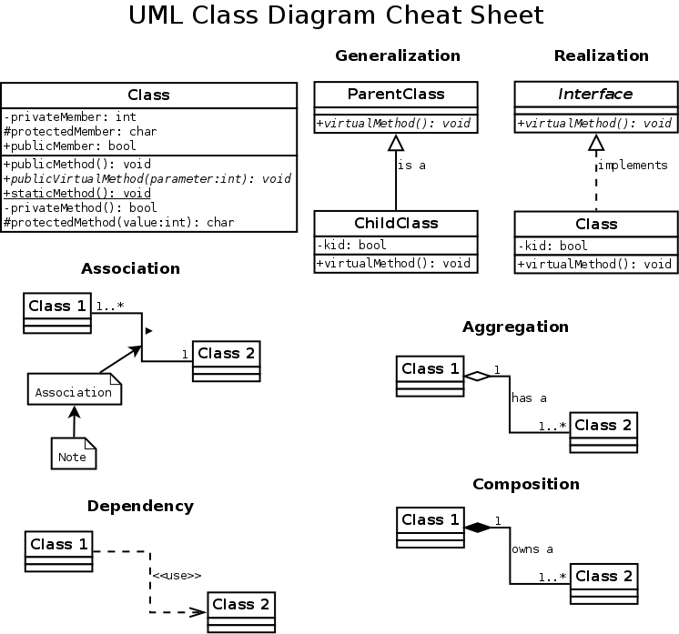UML is a general-purpose, developmental, modeling language

While UML is a powerful tool it does come with some challenges.
Some developers do not know the notation, or only know some of it.
UML is seen as complicated with more than 14 different diagram types. Sequence diagrams seem to be the most commonly used.
Not widely used, somes estimates say only 1 in 10 developers use it. Many favouring more informal box and arrow style diagrams.
4+1
4+1 is a view model designed by Philippe Kruchten for "describing the architecture of software-intensive systems, based on the use of multiple, concurrent views".
4+1 diagrams provide different views of systems
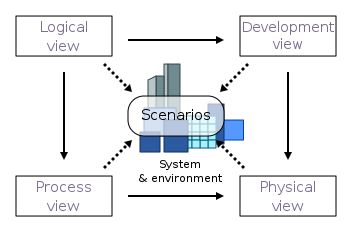4+1 diagrams are comprised of the following
- Logical view is concerned with the functionality that the system provides to end-users.
- Process view deals with the dynamic aspects of the system, explains the system processes and how they communicate, and focuses on the runtime behavior of the system.
- Development view illustrates a system from a programmer's perspective and is concerned with software management.
- Physical view depicts the system from a system engineer's point of view.
- Scenarios describe sequences of interactions between objects and between processes. They are used to identify architectural elements and to illustrate and validate the architecture design.
4+1 challenges
- It requires some familiarity with its terminology before it can be used.
- Usage appears to be quite low, searching online development communities returns few mentions.
- However familiar developers are with UML, very few seem to have even heard of 4+1 views.
So what types of diagrams are developers using?
Sometimes nothing
"We don't need diagrams, we are Agile!"
- Anonymous
Most of the time its Whiteboard diagrams
Names have been removed to protect the guilty
All architecture is design, but not all design is architecture.
Grady Booch
Boxes and arrows!
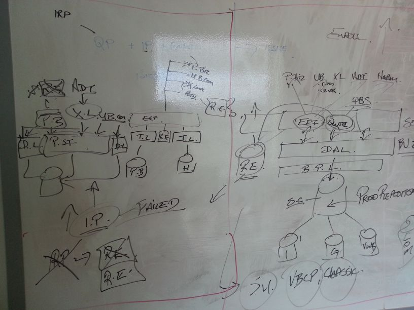More boxes and arrows!
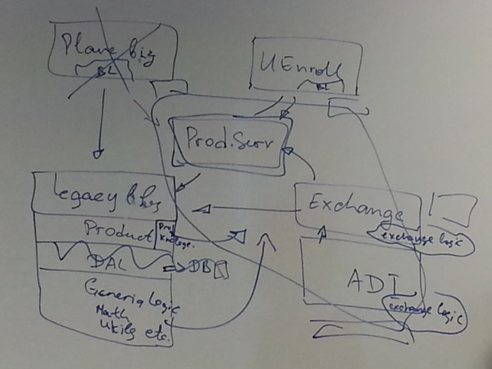Colours but what do they mean?

Bullet lists?
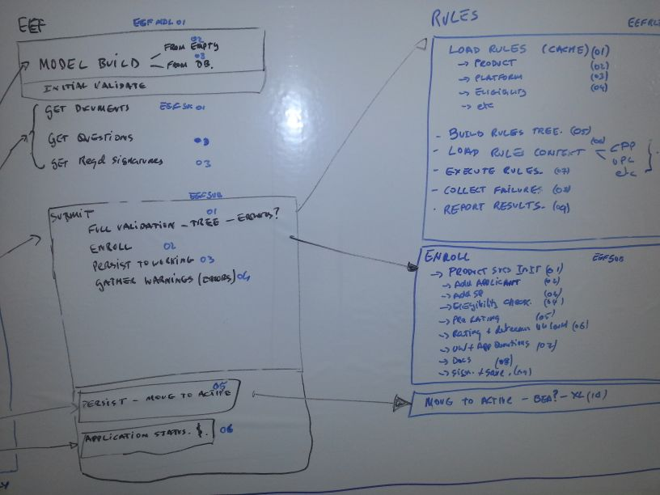Not bad but could do with a title
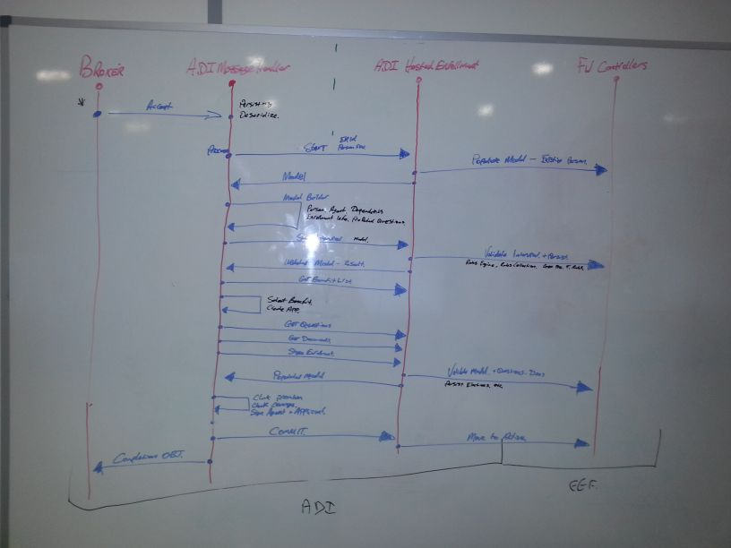All you can eat buffet
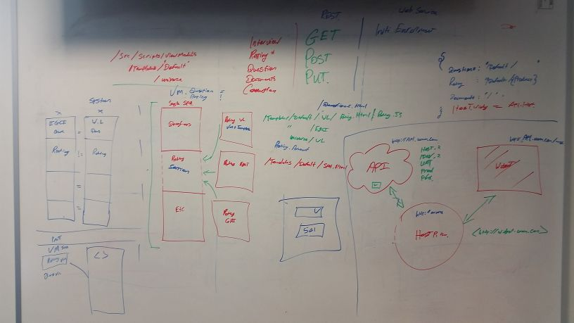Examples from the web
We can find good examples there right?
If it isn't on Google, it doesn't exist.
Jimmy Wales
Searches bring back lots of results.
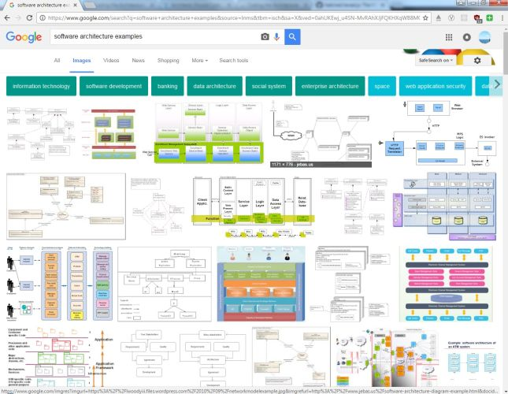 Seems like there is a lot of variation however.Layered or Tiered examples
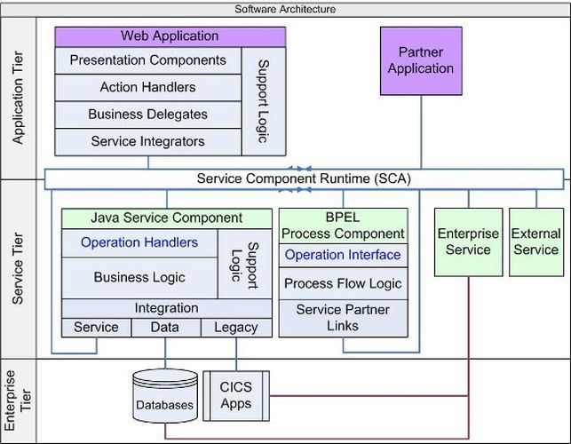 Impossible to tell what this system does.Lots of Icons and Colours
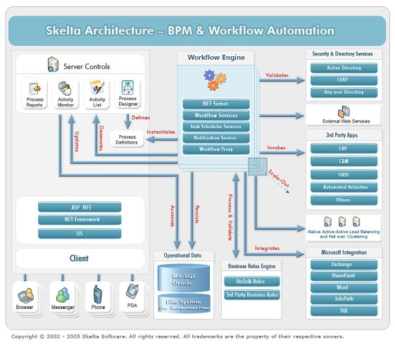 Seems like a list of things placed into boxes though.High level diagrams
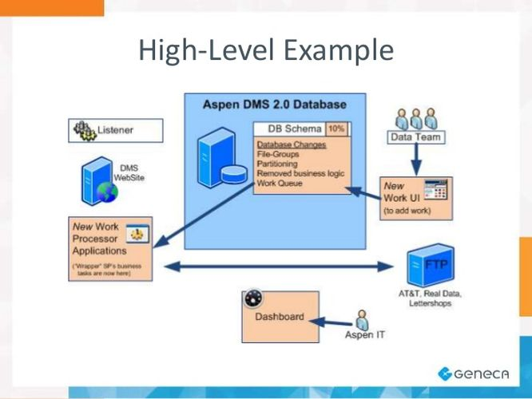Perhaps a little too high?
Another Layered example
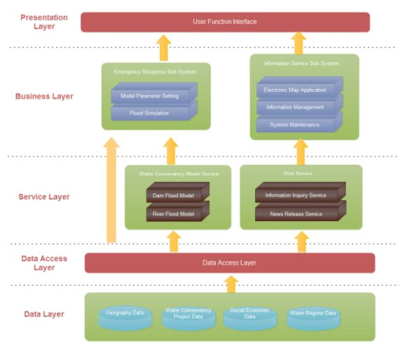 Some interesting databases listed but difficult to tell the systems intention.Layers with a twist
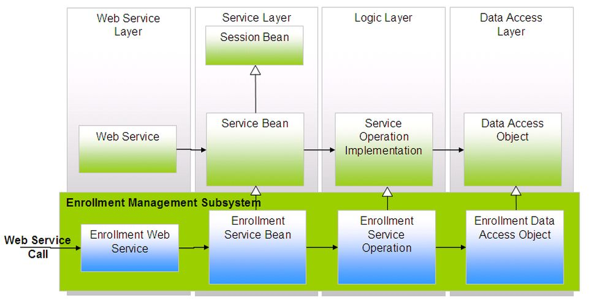 Do arrows represent dependencies or paths through the application?Items labled by what they are rather than what they do.
Layers, boxes and arrows

I like the arrows!
High level diagram, including some low level data access rights
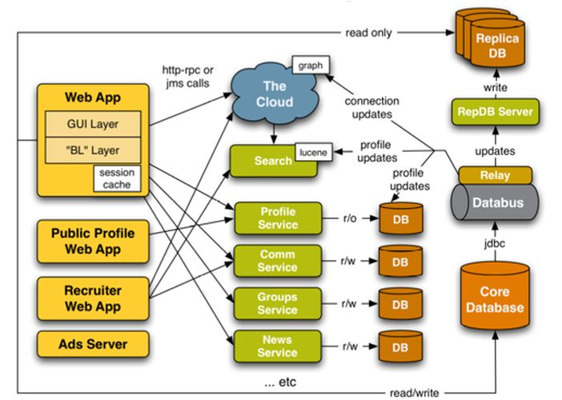Do the arrows only convey read/write access? Or communication direction?
So our web search brought back a lot of results but finding solid architecture examples is pretty difficult.
Why is it so difficult to find good diagram examples?
Hard to decide what to show.
Hard to decide what not to show.
Use of notations, symbols and colours is inconsistent.
Diagrams are not self explanatory, instead they are props in a conversation.
Most importantly, its really hard to stay at a single level of abstraction.
Unknowns revealed during implementation drive design changes
This forces software architects to walk a fine line when designing solutions:
- Put too much detail in your diagrams and you may face constant design revisions or diagrams which quickly become stale or outdated.
- Put too little detail in your diagrams then they can remain accurate for longer but are rarely used by anyone. (How many diagrams sit in sharepoint and were/are never looked at?)
What should a good Architecture diagram provide?
A common set of abstractions.
To describe a software system effectively you should start at a low resolution explanation and progress to greater detail until reaching the highest resolution level, usually code.
Having a common set of defined levels allows for a smoother transition to greater levels of detail while also allowing for different systems to be compared to some degree.
Reduce the cognitive load.
A single diagram can become cluttered with lots of information, trying to cover all potential questions in one go.
A small collection of simple diagrams can more effectively describe different levels of abstraction thereby making it easier to understand each level individually.
Allow us to reason about complex systems.
By breaking complex systems down into clearer abstract levels we are able to discuss and reason about each level in isolation.
Conversations do not spiral across a wide range of technical details and can instead be more focused.
Be grounded in reality.
A very common misconception is that architectural diagrams must be a high-level or conceptual view of the system in question. This has lead to developers viewing them as somewhat pointless.
Software developers are the most important stakeholder for any diagram or design. Diagrams should include details that are useful and helpful to them as a priority.
Stay relevant when change is certain.
Todays reality is that applications can change and expand rapidly, particularly when the work is done in an Agile fashion. The direction set for the application in the first sprint may not be where it is heading in sprint 3, based on the Product Owners decision to change scope.
That's great gary, but what would those diagrams look like?
C4 is one potential option
Created by Simon Brown and covered in the Software architecture for developers book.
Not intended to be a "standard", rather a set of common levels that can be used to describe a software system.
Context, Containers, Components and Classes
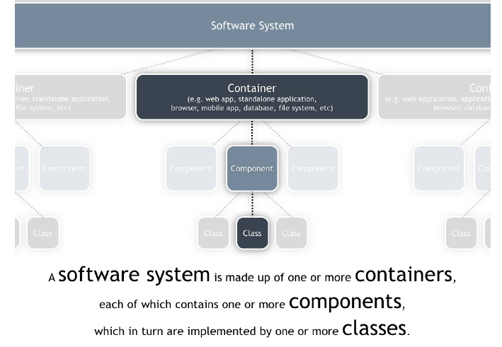Context - What
A Context diagram should cover the following questions:
- What will the software system we are building do?
- How does it fit with existing/legacy systems?
- Who will use it?
It should include Users, Actors, Roles, Personas and other IT systems.
Context - Who
The intended audience for Context diagrams includes Technical and Non-Technical people as it is sufficiently high-level to provide a quick overview of what the systems will do when it is complete. It also provides a starting point for future discussions.
Context - example
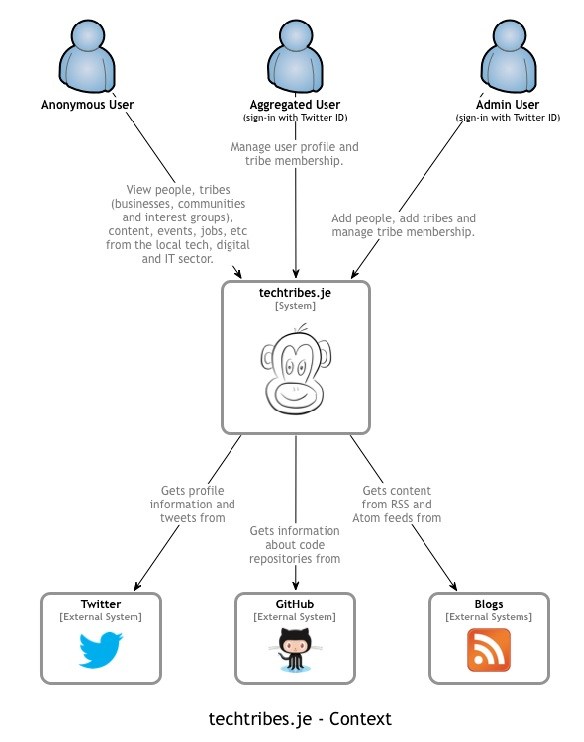Container
A Container diagram should answer the following questions:
- What are the main building blocks of the system?
- What are the high-level technical decisions?
- How are responsibilities distributed across the system?
- How do Containers communitcate with one another?
- Where do developers need to write code in order to implement features?
Container - What
Containers are logical executables, applications or processes that make up the overall system. Another way to think of them is as independently deployable items, which could be replaced with an alternative technology without majorly affecting the System.
Container example

Component
A Component diagram should cover the following:
- What components or services is the system made up of?
- How does the system operate at a high-level?
- Do all components have a defined home i.e. live in a Container?
Component
Components are relatively coarse-grained building blocks of the overall system and each User Story should be associated with functions from one or more components.
If all defined User Stories can be implemented using the Components you have already defined then it is likely that you have captured all. If you find that you have gaps where a User Story requires a feature not currently provided by your collection of components then it is likely you are missing one or more.
Component
For each Component you should be able to specify the following:
- Name - e.g. Profile, Login, Order
- Technology - e.g. Java, .NET, REST API, WCF, ESB etc.
- Responsibilities - A high-level statement regarding what the Component does.
Component example
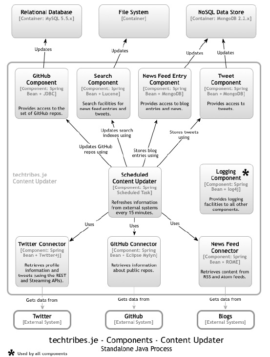Class
Class level diagrams are optional items used for unusually complicated scenarios.
I have found that sequence diagrams are usually more beneficial in describing complexity at this level.
Details on Demand
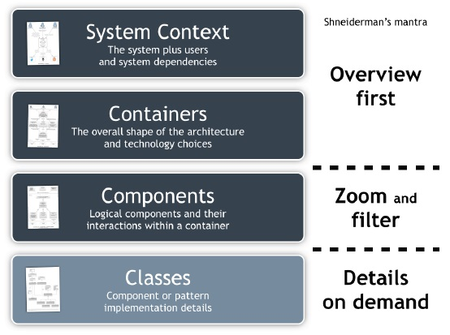C4 Examples
Some diagrams I created following the C4 abstractons.
These have been paired back a bit with some sensitive content removed.
Overview
Context
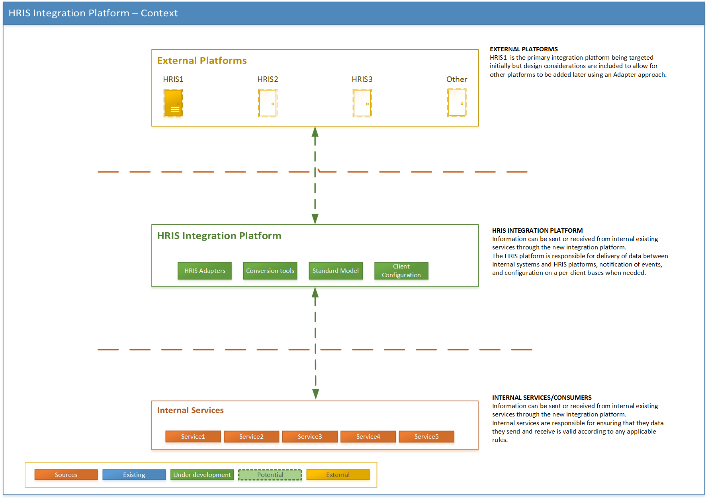
Container
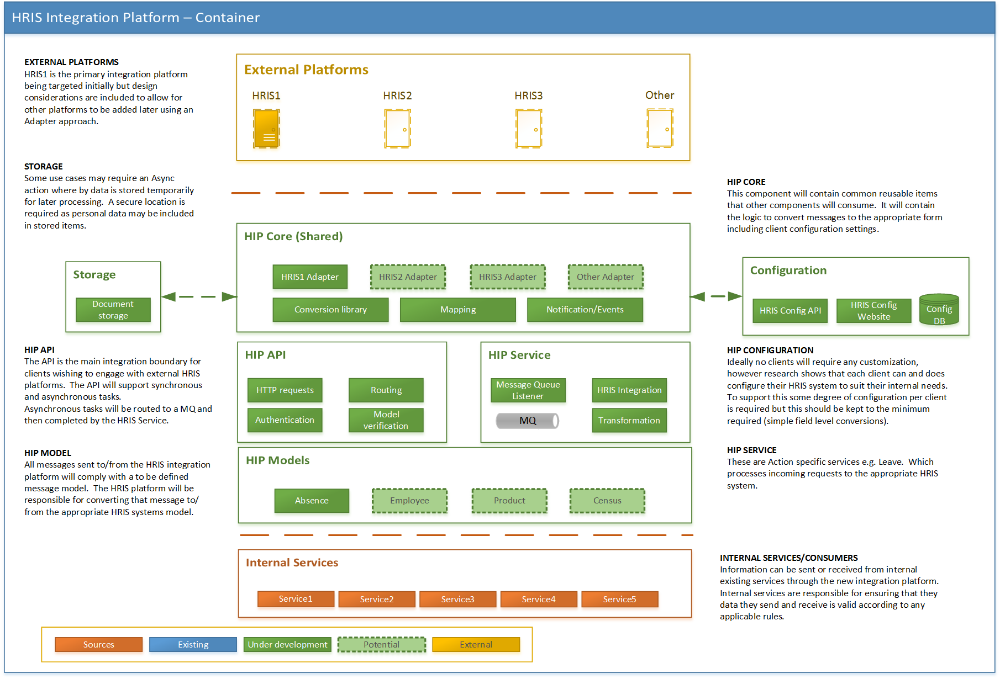
Component
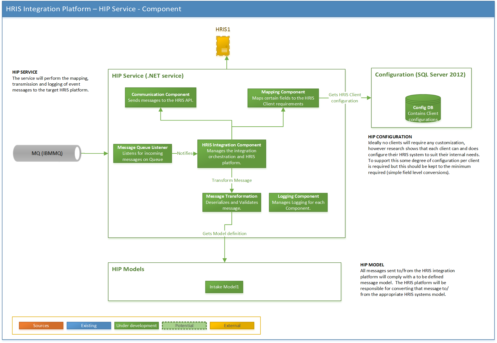
Class
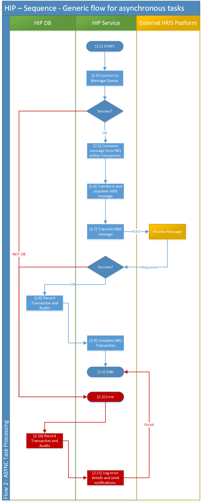
Questions?
Some extra thoughts
Compare for a moment how the contruction industry does architecture
Guess what this is?
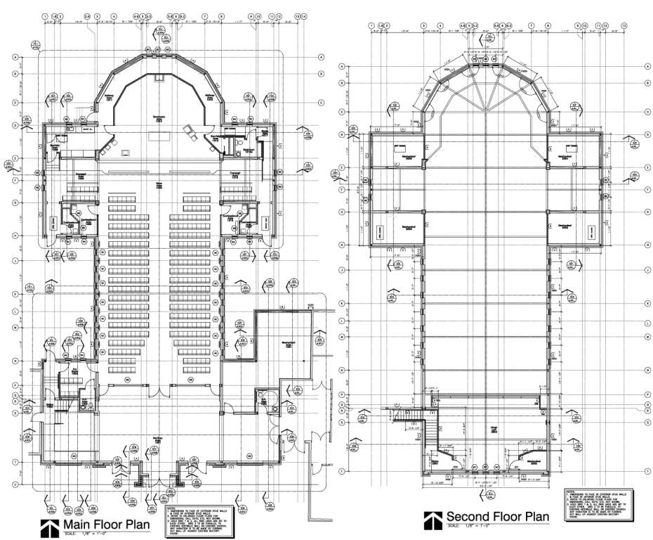
How do we make software visuals as self evident?
Our tools are immature.
Which considering that we build tools for other industries is pretty surprising.
A typical dependency graph.
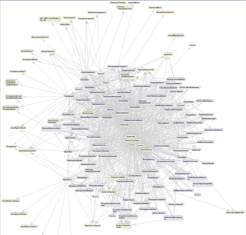If Houses were drawn like software.
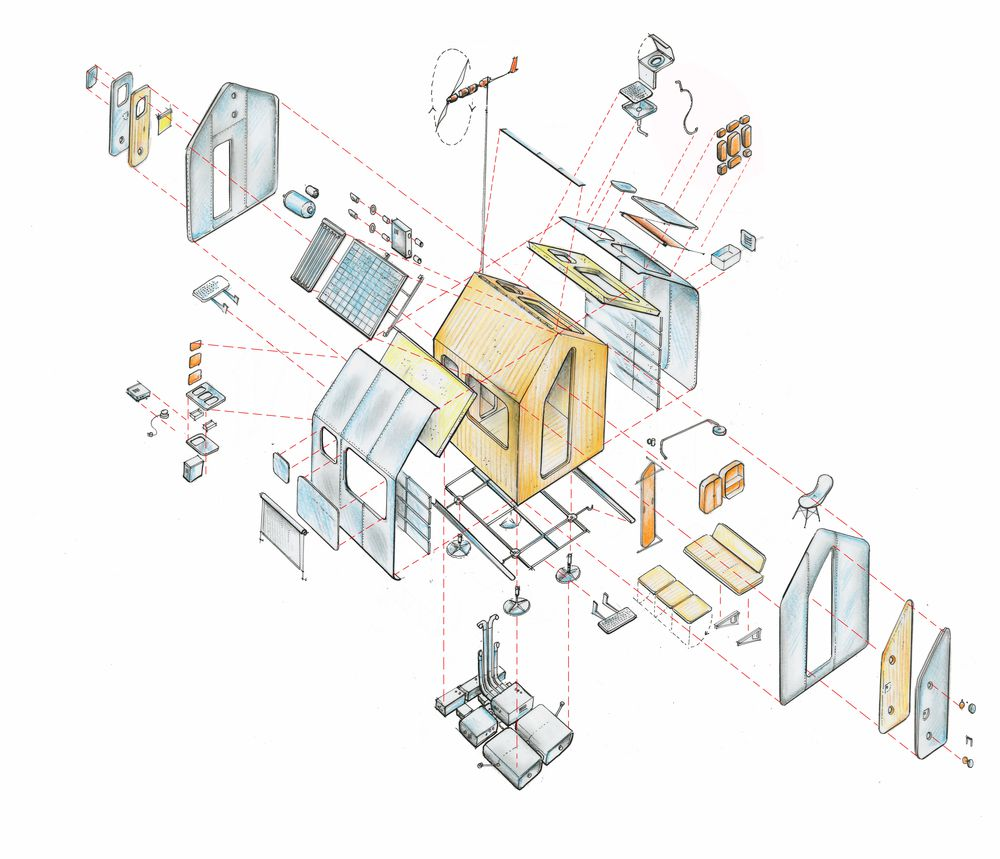